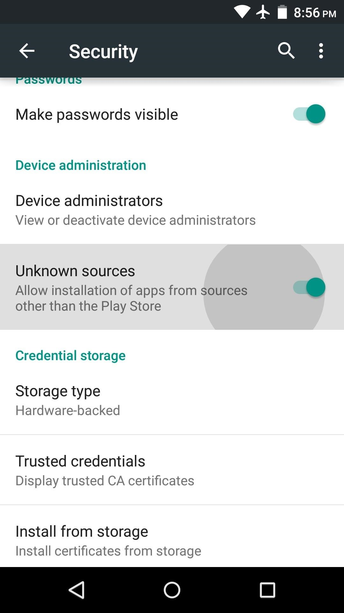

Cras justo odio, dapibus ac facilisis in, egestas eget quam. Fusce dapibus, tellus ac cursus commodo, tortor mauris condimentum nibh, ut fermentum massa justo sit amet risus.
Enabling this function is a piece of cake: Simply go to Settings -> Security.

Just check Unknown sources and you're all set.
The article recommendations can be found in the bottom of every article page in the "Read More"-section. Some article may not have any recommendations available.
Anonymized data will be published after the user study. Anonymized data will not allow identification of participants.
AppInstallId (anonymized / hashed), pages viewed, recommendations clicked, session length, pages shared.
Donec id elit non mi porta gravida at eget metus. Maecenas faucibus mollis interdum.
Morbi leo risus, porta ac consectetur ac, vestibulum at eros. Cras mattis consectetur purus sit amet fermentum. Cras justo odio, dapibus ac facilisis in, egestas eget quam. Fusce dapibus, tellus ac cursus commodo, tortor mauris condimentum nibh, ut fermentum massa justo.
Morbi leo risus, porta ac consectetur ac, vestibulum at eros. Cras mattis consectetur purus sit amet fermentum.
Maecenas sed diam eget risus varius blandit sit amet non magna.